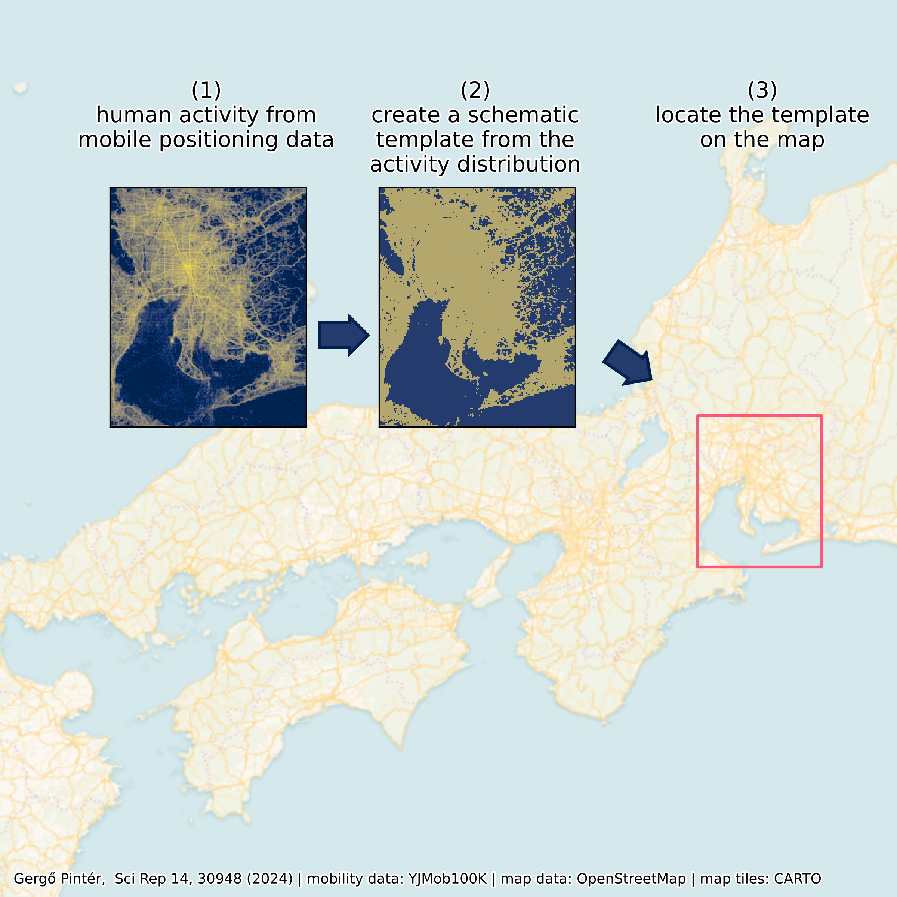
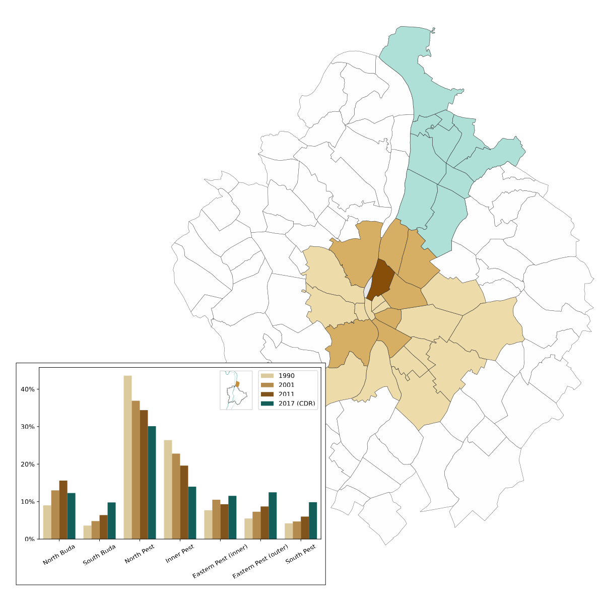
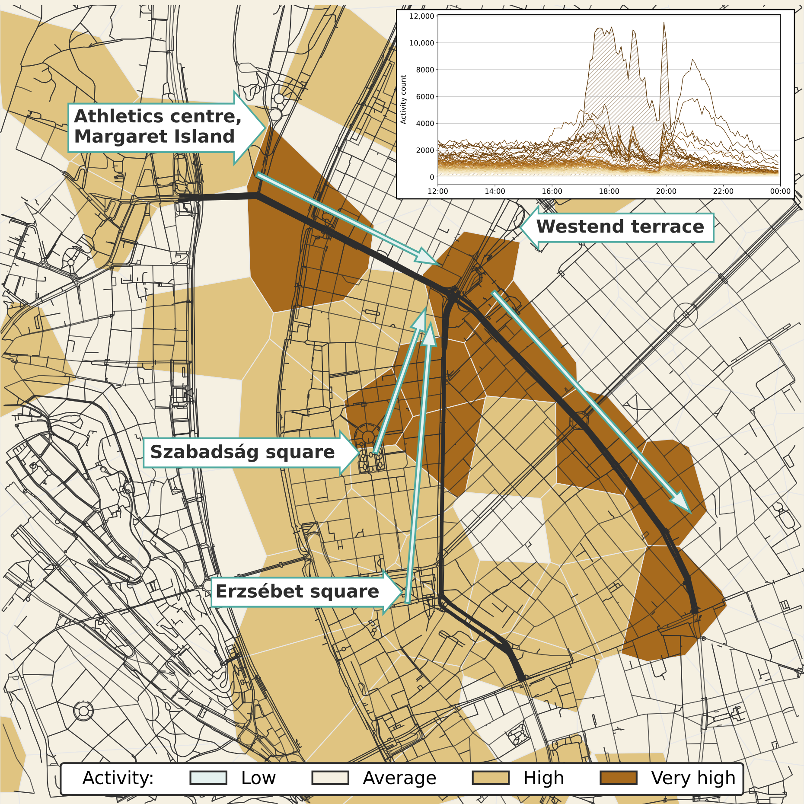
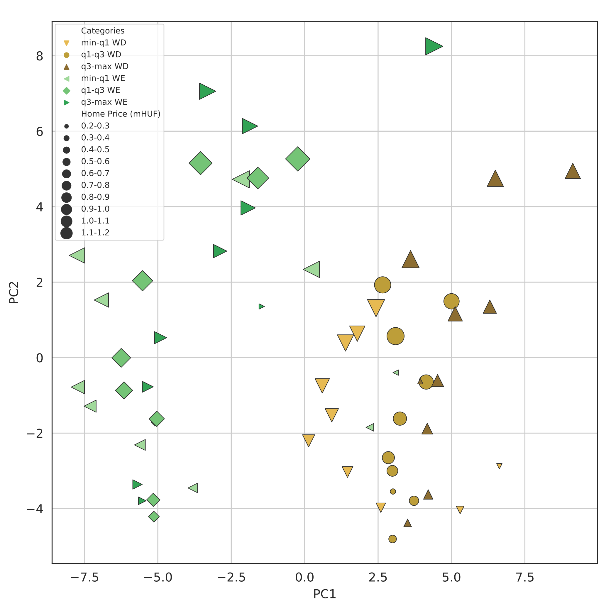

engineering information technologist, Ph.D.
postdoctoral research fellow at ANETI Lab of Corvinus University of Budapest
interested in data science, data visualization, urban mobility, social sensing, computational sociology, and software engineering
")

")


